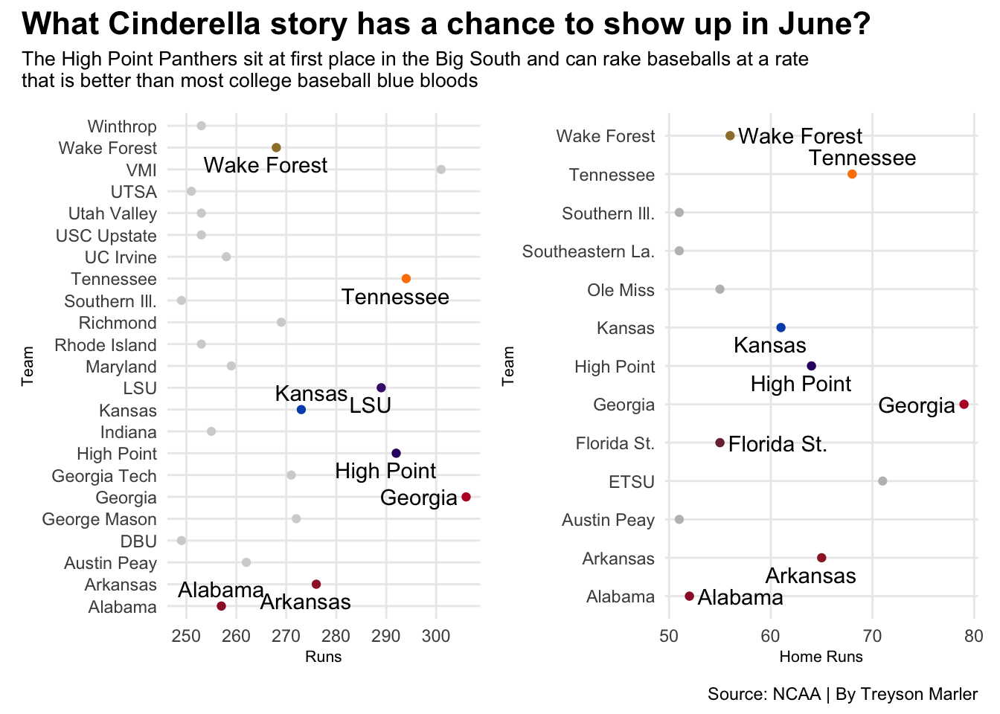

Who is on pace to make the Men’s College World Series?
college
baseball
omaha
Author
Treyson Marler
Published
April 14, 2025
Omaha. It’s the most coveted destination for any player who dreams of playing at the highest level in college baseball. Every year 8 of the best teams gather in Omaha, Nebraska for the Men’s College World Series to crown the best team in the country.
The 2025 Men’s CWS is less than 2 months away and the college baseball regular season is roughly at the halfway point. Therefore, there should be a decent gauge of who will be making the trip to middle America later this year.
Let’s take a look at the numbers.
To win at baseball you need to do 3 simple things: Score a lot of runs, give up few runs, and for fun hit some home runs along the way.
For starters, here is a look at the ERA, runs scored, and home run numbers of the 8 teams who made the College World Series last season as of March 31st, 2024.
Code
library(tidyverse)library(patchwork)hr24 <-read_csv("college_baseball_2024_homeruns.csv")newhr24 <- hr24 |>separate(`W-L`, into=c("W", "L", "T"), sep="-") |>separate(Team, into =c("School", "Conference"), sep="\\(") |>mutate(Conference=gsub(")", "", Conference)) |>mutate(School =str_trim(School)) |>mutate(Conference =str_trim(Conference))era24 <-read_csv("college_baseball_2024_era.csv")newera24 <- era24 |>separate(`W-L`, into=c("W", "L", "T"), sep="-") |>separate(Team, into =c("School", "Conference"), sep="\\(") |>mutate(Conference=gsub(")", "", Conference)) |>mutate(School =str_trim(School)) |>mutate(Conference =str_trim(Conference))runs24 <-read_csv("college_baseball_2024_runs.csv")newruns24 <- runs24 |>separate(`W-L`, into=c("W", "L", "T"), sep="-") |>separate(Team, into =c("School", "Conference"), sep="\\(") |>mutate(Conference=gsub(")", "", Conference)) |>mutate(School =str_trim(School)) |>mutate(Conference =str_trim(Conference))hrcws24 <- newhr24 |>filter(School =="North Carolina"| School =="Virginia"| School =="Tennessee"| School =="Florida St."| School =="Kentucky"| School =="NC State"| School =="Texas A&M"| School =="Florida")eracws24 <- newera24 |>filter(School =="North Carolina"| School =="Virginia"| School =="Tennessee"| School =="Florida St."| School =="Kentucky"| School =="NC State"| School =="Texas A&M"| School =="Florida")runscws24 <- newruns24 |>filter(School =="North Carolina"| School =="Virginia"| School =="Tennessee"| School =="Florida St."| School =="Kentucky"| School =="NC State"| School =="Texas A&M"| School =="Florida")tn_runs <- runscws24 |>filter(School =="Tennessee")tn_era <- eracws24 |>filter(School =="Tennessee")tn_hr <- hrcws24 |>filter(School =="Tennessee")tx_runs <- runscws24 |>filter(School =="Texas A&M")tx_era <- eracws24 |>filter(School =="Texas A&M")tx_hr <- hrcws24 |>filter(School =="Texas A&M")erachart <-ggplot() +geom_bar(data= eracws24, aes(x=reorder(School, -ERA), weight= ERA), fill="lightgrey") +geom_bar(data= tn_era, aes(x=reorder(School, -ERA), weight= ERA), fill="#FF8200") +geom_bar(data= tx_era, aes(x=reorder(School, -ERA), weight= ERA), fill="#500000") +labs(x="", y="Earned Run Average" ) +coord_flip() +theme_minimal()hrchart <-ggplot() +geom_bar(data= hrcws24, aes(x=reorder(School, `Home Runs`), weight=`Home Runs`), fill="lightgrey") +geom_bar(data= tn_hr, aes(x=reorder(School, `Home Runs`), weight=`Home Runs`), fill="#FF8200") +geom_bar(data= tx_hr, aes(x=reorder(School, `Home Runs`), weight=`Home Runs`), fill="#500000") +labs(x="", y="Home Runs" ) +coord_flip() +theme_minimal()runschart <-ggplot() +geom_bar(data= runscws24, aes(x=reorder(School, Runs), weight= Runs),fill="lightgrey") +geom_bar(data= tn_runs, aes(x=reorder(School, Runs), weight= Runs), fill="#FF8200") +geom_bar(data= tx_runs, aes(x=reorder(School, Runs), weight= Runs), fill="#500000") +labs(x="", y="Runs Scored" ) +coord_flip() +theme_minimal()hrchart + runschart / erachart +plot_annotation(title="What Teams Advanced to Omaha Last Season?", subtitle="The statistics of each team that made it to the Men's College World Series last season, two teams that made it to finals are in team color", caption="Source: NCAA | By Treyson Marler " ) &theme(plot.title =element_text(size =20, face ="bold"),axis.title =element_text(size =8), plot.subtitle =element_text(size=10), panel.grid.minor =element_blank(),plot.title.position ="plot" )
Pretty simple. Tennessee and Texas A&M both hit lots of home runs and had really good pitching that helped carry them to the MCWS Finals, where Tennessee would eventually be crowned the National Champion.
But how could this potentially help predict who will go back in 2025?
These 8 teams averaged the following numbers in the respective categories:
Runs Scored: 248
Home Runs: 50.125
ERA: 4.57875
So now, flash forward to this season, and these are the teams that hit those same benchmarks at the March 31st point of the 2025 season.
Code
library(tidyverse)library(gt)library(ggbeeswarm)library(ggrepel)library(patchwork)runs25 <-read_csv("college_baseball_2025_Runs.csv")era25 <-read_csv("college_baseball_2025_era.csv")hr25 <-read_csv("college_baseball_2025_homeruns.csv")cwsfavorites <-read_csv("cwsfavorites25.csv")newruns25 <- runs25 |>filter(Runs >248)newra25 <- era25 |>filter(ERA <4.57875)newhr25 <- hr25 |>filter(`Home Runs`>50.125 )cwsfavorites |>gt() |>cols_label(ERA ="Earned Run Average") |>tab_header(title ="What Teams are on Track to Make the 2025 Men's College World Series?",subtitle ="These teams all hit the 3 benchmark statistics that the 8 teams in Omaha last season averaged." ) |>tab_style(style =cell_text(color ="black", weight ="bold", align ="left"),locations =cells_title("title") ) |>tab_style(style =cell_text(color ="black", align ="left"),locations =cells_title("subtitle") ) |>tab_source_note (source_note =md("**By:** Treyson Marler | **Source:** NCAA ") ) |>tab_style(locations =cells_column_labels(columns =everything()),style =list(cell_borders(sides ="bottom", weight =px(3)),cell_text(weight ="bold", size=14))) |>opt_row_striping() |>opt_table_lines("none") |>tab_style(style =list(cell_fill(color ="#0051BA"),cell_text(color ="white") ),locations =cells_body(rows = School =="Kansas"))
What Teams are on Track to Make the 2025 Men's College World Series?
These teams all hit the 3 benchmark statistics that the 8 teams in Omaha last season averaged.
School
Home Runs
Runs Scored
Earned Run Average
Conference
Tennessee
68
294
2.54
SEC
Arkansas
65
276
3.60
SEC
Wake Forest
56
268
4.42
ACC
Alabama
52
257
3.97
SEC
Kansas
61
273
4.27
Big 12
By: Treyson Marler | Source: NCAA
Kansas? Yep, Kansas. The last time the Jayhawks went to the College World Series was 1993 and they look to be well on their way to a trip back this summer.
5 teams hit the criteria. Therefore, for the first time ever only 5 teams instead of 8 are going to Omaha.
Wrong.
Back to the drawing board.
To find the final 3 teams, let’s look at the bigger picture.
Although Georgia doesn’t make the ERA requirement. They lead the country in both runs scored and home runs.
Another key to winning baseball games? Good pitching and consistency on offense.
LSU and Florida State find themselves in the top half of the country in team ERA and Offensive efficiency.
That should just about round out the field, unless a Cinderella story has something to say about it.
High Point finds their offense in the top half of home runs and runs scored with a chance to do some damage in the postseason.
Code
chart1 <-ggplot() +geom_beeswarm(data=newruns25, aes(x= Runs, y=Team ), color="lightgrey") +geom_beeswarm(data=abruns25, aes(x= Runs, y= Team), color="#9E1B32") +geom_text_repel(data=abruns25, aes(x=Runs, y=Team, label=Team)) +geom_beeswarm(data=arkruns25, aes(x= Runs, y= Team), color="#9D2235") +geom_text_repel(data=arkruns25, aes(x=Runs, y=Team, label=Team)) +geom_beeswarm(data=tnruns25, aes(x= Runs, y= Team), color="#FF8200") +geom_text_repel(data=tnruns25, aes(x=Runs, y=Team, label=Team)) +geom_beeswarm(data=wfruns25, aes(x= Runs, y= Team), color="#9E7E38") +geom_text_repel(data=wfruns25, aes(x=Runs, y=Team, label=Team)) +geom_beeswarm(data=kuruns25, aes(x= Runs, y= Team), color="#0051BA") +geom_text_repel(data=kuruns25, aes(x=Runs, y=Team, label=Team)) +geom_beeswarm(data=garuns25, aes(x= Runs, y= Team), color="#BA0C2F") +geom_text_repel(data=garuns25, aes(x=Runs, y=Team, label=Team)) +geom_beeswarm(data=hpruns25, aes(x= Runs, y= Team), color="#330072") +geom_text_repel(data=hpruns25, aes(x=Runs, y=Team, label=Team)) +geom_beeswarm(data=lsuruns25, aes(x= Runs, y= Team), color="#461D7C") +geom_text_repel(data=lsuruns25, aes(x= Runs, y=Team, label=Team)) +theme_minimal()chart2 <-ggplot() +geom_beeswarm(data=newhr25, aes(x=`Home Runs`, y=Team ), color="grey") +geom_beeswarm(data=abhr25, aes(x=`Home Runs`, y= Team), color="#9E1B32") +geom_text_repel(data=abhr25, aes(x=`Home Runs`, y=Team, label=Team)) +geom_beeswarm(data=arkhr25, aes(x=`Home Runs`, y= Team), color="#9D2235") +geom_text_repel(data=arkhr25, aes(x=`Home Runs`, y=Team, label=Team)) +geom_beeswarm(data=tnhr25, aes(x=`Home Runs`, y= Team), color="#FF8200") +geom_text_repel(data=tnhr25, aes(x=`Home Runs`, y=Team, label=Team)) +geom_beeswarm(data=wfhr25, aes(x=`Home Runs`, y= Team), color="#9E7E38") +geom_text_repel(data=wfhr25, aes(x=`Home Runs`, y=Team, label=Team)) +geom_beeswarm(data=kuhr25, aes(x=`Home Runs`, y= Team), color="#0051BA") +geom_text_repel(data=kuhr25, aes(x=`Home Runs`, y=Team, label=Team)) +geom_beeswarm(data=gahr25, aes(x=`Home Runs`, y= Team), color="#BA0C2F") +geom_text_repel(data=gahr25, aes(x=`Home Runs`, y=Team, label=Team)) +geom_beeswarm(data=fsuhr25, aes(x=`Home Runs`, y= Team), color="#782F40") +geom_text_repel(data=fsuhr25, aes(x=`Home Runs`, y=Team, label=Team)) +geom_beeswarm(data=hphr25, aes(x=`Home Runs`, y= Team), color="#330072") +geom_text_repel(data=hphr25, aes(x=`Home Runs`, y=Team, label=Team)) +theme_minimal()chart1 + chart2 +plot_annotation(title ="What Cinderella story has a chance to show up in June?",subtitle ="The High Point Panthers sit at first place in the Big South and can rake baseballs at a rate that is better than most college baseball blue bloods",caption ="Source: NCAA | By Treyson Marler" ) &theme(plot.title =element_text(size =16, face ="bold"),axis.title =element_text(size =8), plot.subtitle =element_text(size=10), panel.grid.minor =element_blank() )

Omaha. “The Greatest Show on Dirt.” There are very few things like it in sports and all these teams have their eyes set on the big stage as of March 31st, 2025.